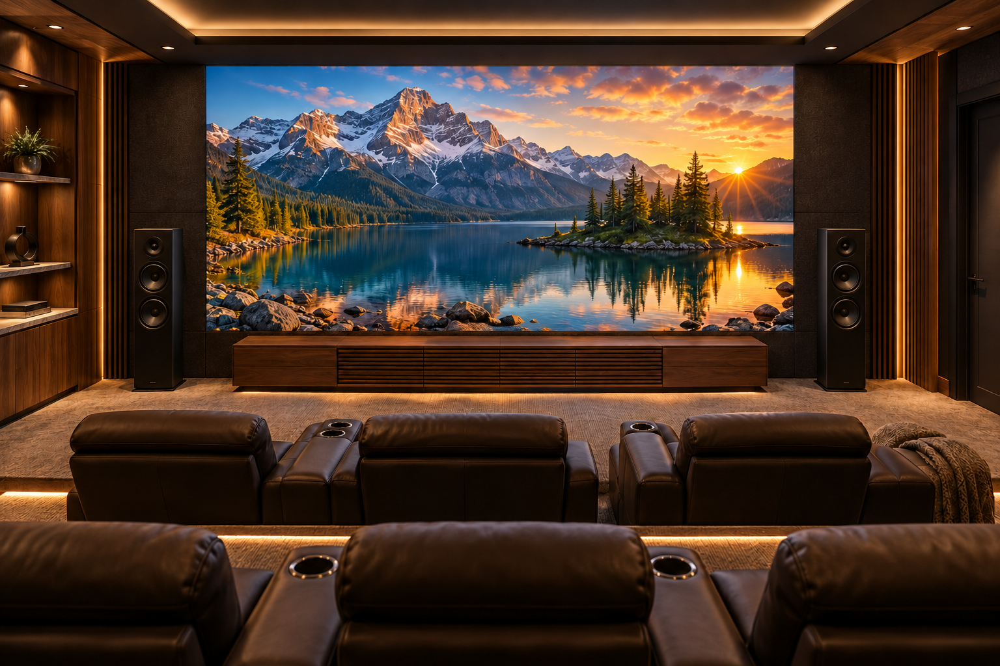
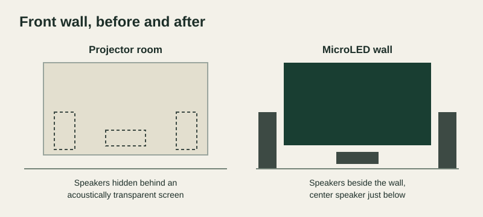

Most home theaters and media rooms can replace a projector or large TV with a MicroLED wall without starting over. The seats, riser, surround speakers, acoustic panels and lighting usually stay where they are. The work happens at the front of the room. The wall has to carry the cabinets, the front speakers move out from behind the old screen, and the new wall needs its own power and a plan for its heat. In return, the picture can grow, the room no longer has to be dark, and the projector comes off the ceiling.
This guide is for rooms that already exist. Our MicroLED vs. projector comparison covers the choice between the two for a new room.
Projector room and MicroLED room, part by part
| Projector or TV today | After the MicroLED upgrade | |
|---|---|---|
| Front wall | A screen on a frame, or one TV mount | A mounting structure across the full width of the image |
| Front speakers | Often hidden behind an acoustically transparent screen | Beside the image, with the center speaker below it |
| Picture size | Set by the screen or the TV | Built to the width your seats call for |
| Room light | The picture washes out unless the room is dark | Holds up with lamps on and shades open |
| Ceiling | Projector, mount and cabling overhead | Projector and mount come out |
| Power and heat | One outlet for the projector or TV | Dedicated circuits and a plan for the added heat |
| Seats, riser and surrounds | In place | Usually stay as they are |
| Service | Light source swaps, or replacing the TV | Individual modules swap out from the front |
What usually stays the same
An upgrade keeps most of what made the room work. Seating positions, the riser, side and rear speakers, overhead speakers, acoustic panels and lighting scenes rarely need to move. The AV processor and sources often stay too, and your dealer confirms the video path from them to the new wall.
What changes at the front wall

The wall itself. A MicroLED wall is built from cabinets about 24 inches wide, 13 inches tall and 1.6 inches deep, each weighing about 9 pounds. They mount to a structure that spans the full image, so your dealer checks what is behind the drywall and adds blocking or a frame where it is needed. Every module comes off from the front, which lets the wall sit close to the surface with no service space behind it. The cabinets are also small enough to carry down a basement stair one at a time.
The front speakers. Many projector rooms hide the left, center and right speakers behind an acoustically transparent screen. A MicroLED wall is solid, so those speakers move beside the image and the center speaker usually sits just below it. Dolby’s home theater installation guidelines place front speakers near seated ear height, about 3.9 feet, and your dealer keeps the new positions as close to that as the wall allows. Rooms that had a TV usually keep their speakers, with the left and right pair moving outward to frame the wider picture. Our center channel planning guide covers the options, including custom soundbars sized to the wall.
The ceiling. The projector, its mount and the cable run overhead come out. The ceiling can be patched, or the opening can be reused for a light or a speaker.
How big the new picture should be
Rooms coming from a projector often keep the same image width, since the seats were planned around it. Many owners go wider at the same time, and a MicroLED wall can be built in a cinema-wide shape that fills the front wall edge to edge.
Rooms coming from a TV usually gain the most. An 85-inch TV is about 74 inches wide. A 150-inch MicroLED wall is about 131 inches wide. The distance from the closest seat to the wall sets the pixel pitch, so the picture looks smooth from every row. Our guides to seating and viewing distance and pixel pitch show how those numbers are worked out.
Room light, power and heat
A projected picture washes out as room light rises, because the screen reflects every light in the room along with the image. A MicroLED wall makes its own light, and our BlackFire surface absorbs room light to keep blacks deep. The room works with lamps on during a game or with the shades open on a Sunday afternoon.
The wall also draws more power than a projector and releases that power as heat inside the room. Your dealer sizes dedicated circuits for the wall and checks that the room’s cooling can carry the added load. Our guide to MicroLED room cooling explains how that load is worked out.
What your dealer checks before drawing the plan
- The front wall: its width and height, what is behind it and how the cabinets will mount
- New positions for the left, center and right speakers
- Electrical capacity and where the dedicated circuits will run
- Cooling for the added heat
- Seating distance, which sets the image size and pixel pitch
- The video path from your existing processor and sources to the wall
- Access into the room, including stairs and doorways
With those answers, an authorized Opal dealer can show you which parts of the room stay, what changes and how long the room will be out of use during the work.
Plan your upgrade with an authorized dealer
Bring photos of your front wall, the room dimensions and a list of your current equipment to an authorized Opal dealer. They can show you a MicroLED wall at full size and map out what your room needs.
Find a Dealer for Your Upgrade